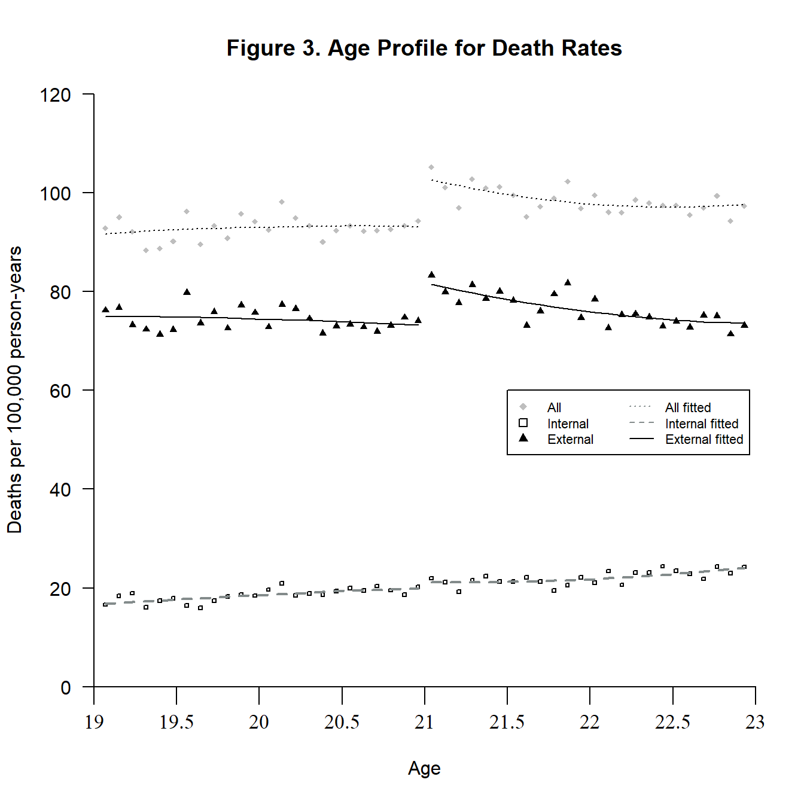
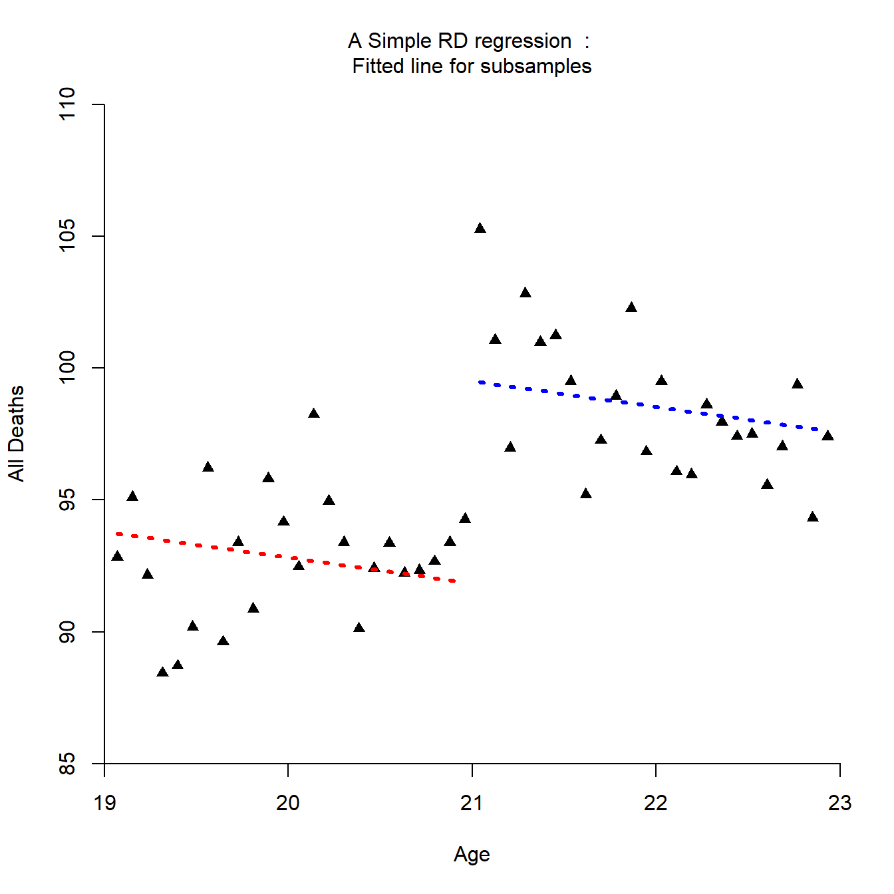
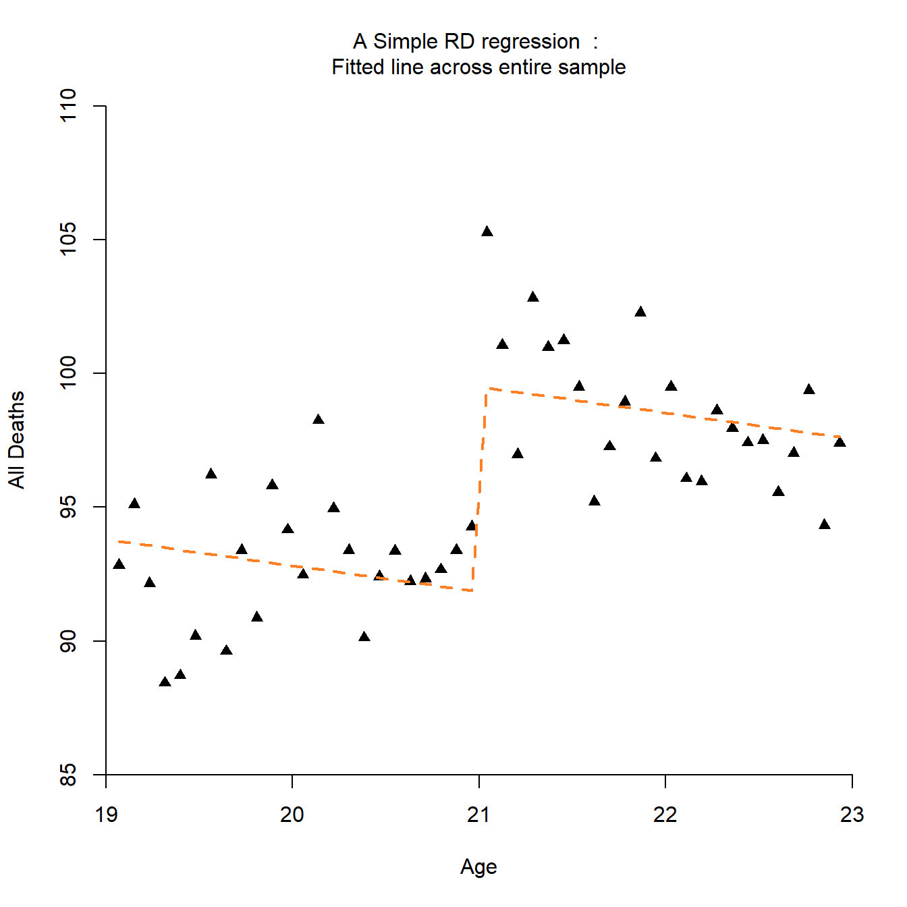
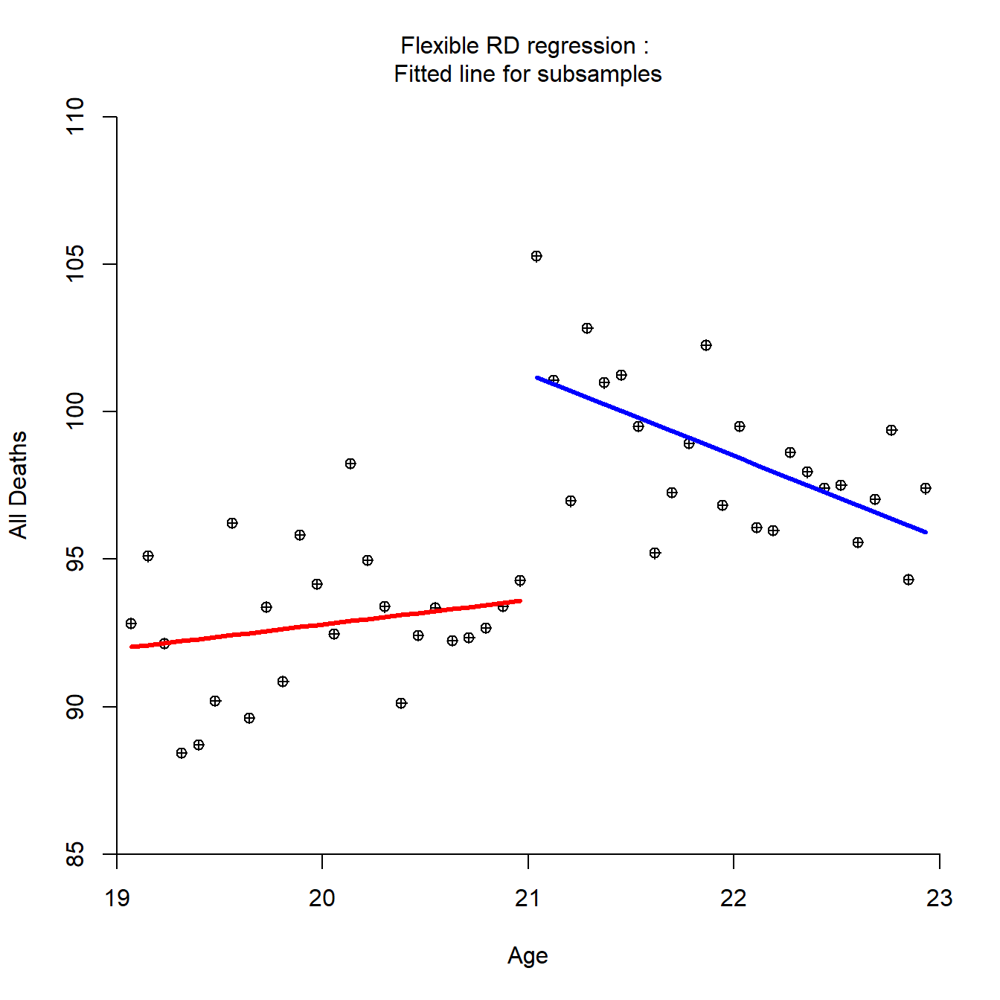
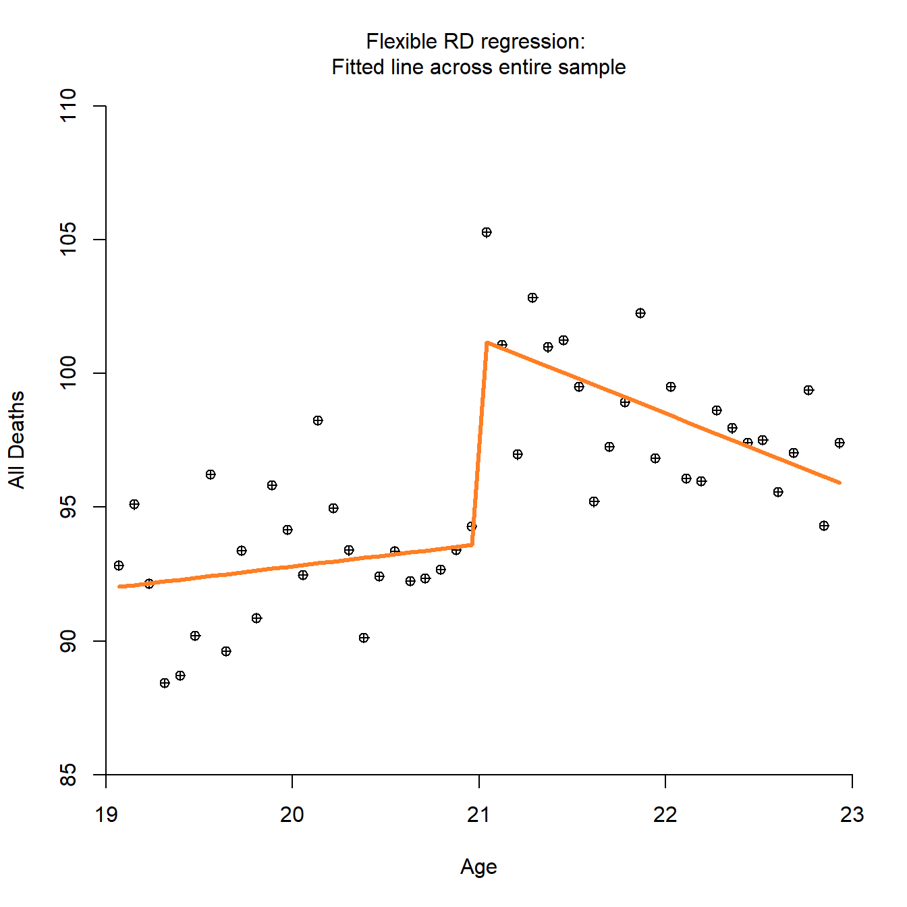
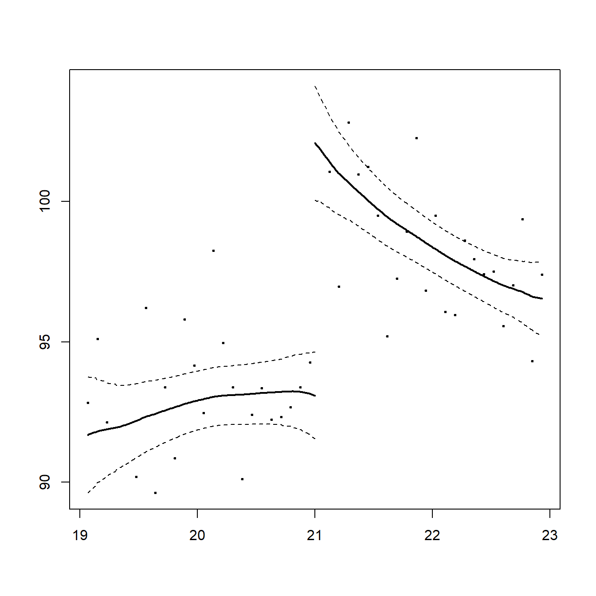
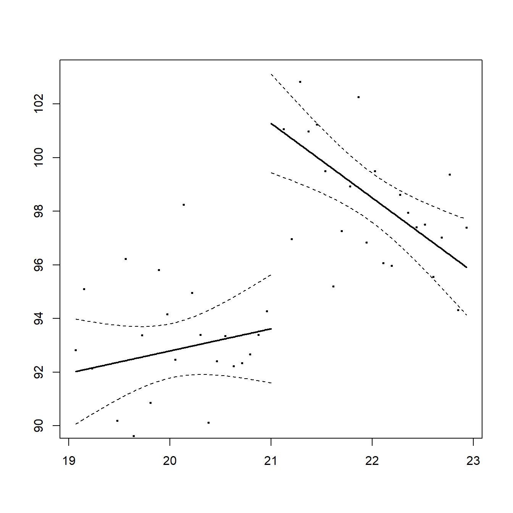

Demography Informal Methods Seminar - Regression Discontinuity
Muntasir Masum - UTSA Department of Demography
6/28/2020
Regression Discontinuity
- A regression discontinuity design (RDD) is a useful quasi-experimental approach to determine the effect of an intervention such as a program, or a policy.
- The RD design was originally proposed by Thistlethwaite and Campbell (1960) to estimate treatment effects in a non-experimental setting where treatment is determined by whether an observed ‘assignment’ variable exceeds a known cutoff point.
- Used when researchers are unable to randomly assign subjects to treatment and control groups.
- Does not rely upon matching to equate experimental and control groups.
- Developed to control for selection bias.
When to use it?
Example: Scholarships and College GPA
- Does getting a National Merit Scholarship improve college GPA?
- They wanted to know the causal effect of the program on the differences in grades between students who receive the scholarship and those who don’t.
The national scholarship is awarded based on scoring above a certain threshold on the PSAT, which is a test usually taken by high school students. The key to estimating the effect of the scholarship is that threshold.
- Right around the threshold, individuals are pretty much the same; however, students above the threshold receive the scholarship, and students below don’t.
- In essence, RDD compares the students above and below the threshold and considers the difference in outcomes to be the program effect.
- The assignment variables needs to be a continuous variable, with a range of values on either side of the cut-point.
Students with test scores, X , greater than or equal to a cutoff value c received the award, and those with scores below the cutoff were denied the award. This generated a sharp discontinuity in the ‘treatment’ (receiving the award) as a function of the test score (Lee and Lamieux, 2015).
Conceptual framework

There appears to be no reason, other than the merit award, for future academic outcomes, Y , to be a discontinuous function of the test score. This simple reasoning suggests attributing the discontinuous jump in Y at c to the causal effect of the merit award.
Key terms
- Running/forcing variable: Index or measure that determines eligibility.
- Cutoff/cutpoint/threshold: Number that formally assigns access to program.
- Outcome: The thing we want to see the causal effect on.
- Bandwidth: Window around cutoff where we focus your analysis. All we really care about is the area right around the cutoff. Observations far away from the cutoff don’t really matter.
- Kernel: Method for assigning importance to values by distance to cutoff. We care the most about observations right by the cutoff, so give them extra weight.
- Noncompliance: People on the margin of the discontinuity might end up in/out of the program.
Averate treatment effect (ATE)
It is typically imagined that for each individual i, there exists a pair of ‘potential’ outcomes: - \(Y_i\)(1) for what would occur if the individual were exposed to the treatment and \(Y_i\)(0) if not exposed.
The fundamental problem of causal inference is that we cannot observe the pair \(Y_i\)(1) and \(Y_i\)(0) simultaneously. We therefore typically focus on average effects of the treatment, that is, averages of \(Y_i\)(1) - \(Y_i\)(0) over (sub)populations, rather than on unit-level effects (Lee and Lamieux, 2015).
- The local average treatment effect also compares outcomes with and without treatment but is conditional on some characteristic x.

In the RD setting, we can imagine there are two underlying relationships between average potential outcomes and X, represented by \(E[Y_i(1)|X]\) and \(E[Y_i(0)|X]\), as in Figure 14.2.
But by definition of the RD design, all individuals to the right of the cutoff (c = 2 in this example) are exposed to treatment, and all those to the left are denied treatment. Therefore, we only observe \(E[Y_i(1)|X]\) to the right of the cutoff and \(E[Y_i(0)|X]\) to the left of the cutoff, as indicated in the figure.
The difference is the ‘average treatment effect (ATE)’ at the cutoff c.
\[E[Y_i(1) - Y_i(0)|X] = c\]
Assumptions
- Cutoff criterion
- Observed variable remains constant
- Selection threat if the cutoff criterion changes
- Continuous Pretest Distribution
- Both groups derive from one continuous pretest distribution
- Group division determined by the cutoff criterion
- Program Implementation
- All recipients receive the same treatment in the same manner.
Advantages
In addition to providing a highly credible and transparent way of estimating program effects, RD designs can be used in a wide variety of contexts covering a large number of important economic and social questions.
- RDD is considered an excellent way to extract causal estimates from observational data.
- This approach is used specifically in the instance of when there is a exogenous cutoff score on a variable.
- Does not assume that treatment and comparison groups begin at equal places before treatment
- Cutoff criterion to select groups
- Pre-determined
- Completely known
- An alternative to randomized control trial experiments
Disadvantages
- Demands lots of data, since we are throwing lots of it away.
Notable examples of RD designs:
- Effect of Class Size on Student Achievement (Angrist & Lavy, 1999)
- Effect of Head Start Funding on Child Mortality (Ludwig & Miller, 2007)
- Effect of education on mortality (Albouy and Lequien, 2009)
- Skipping class in college and exam performance (Dobkin, Gil, & Marion, 2009)
- Effect of Alcohol Consumption on Mortality (Carpenter and Dobkin, 2009)
- Impact of Texas top 10% law on college enrollment (Niu & Tienda, 2010)
- Minimum legal drinking age and public health (Carpenter and Dobkin, 2011)
- Effect of income disparity in marriage (Pierce et al., 2012)
- Health effects of minimum legal drinking age (Conover and Scrimgeour, 2013)
- Effect of early vs. deferred HIV treatment on mortality (Bor et al., 2014)
Model Specification
An unbiased estimate of the fitted model can be written as: \[y_i = \beta_0 + \beta_1x_i + \beta_2z_i + e_i\]
Where,
- \(y_i\) = Posttest outcome variable
- \(β_0\) = Intercept
- \(β_1\) = Effect of independent variable
- \(x_1\) = Pretest independent variable
- \(β_2\) = Effect of dummy variable
- \(z_i\) = Dummy variable (0 = Control, 1 = Treatment)
- \(e_i\) = Error
Doing the analysis in R
Thoemmes, Liao, and Jin (2017) in their article The Analysis of the Regression-Discontinuity Design in R describe the analysis of regression-discontinuity designs (RDDs) using the R packages rdd, rdrobust, and rddtools.
Carpenter and Dobkin (2009)
Carpenter, C., & Dobkin, C. (2009). American Economic Journal: Applied Economics, 1(1), 164-82.
They estimate the effect of alcohol consumption on mortality using the minimum drinking age in a regression discontinuity design.
They found large and immediate increases in drinking at age 21, including a 21 percent increase in recent drinking days. - They also found a discrete 9 percent increase in the mortality rate at age 21, primarily due to motor vehicle accidents, alcohol-related deaths, and suicides.
Download the MLDA dataset AEJfigs.dta from the Mastering Metrics website under “Chapter 4”. The only two variables we will need for our analysis are agecell which gives age in years (with a decimal point since the ages are binned) and all which gives mortality rates per 100,000 individuals.
Load and summarize data
#rm(list = ls())
mlda <- read_dta('C:/Users/munta/Google Drive/#Summer 2020/Regression Discontinuity/mlda.dta')
#names(mlda)
#subset data
mlda <- subset(mlda, select = c("agecell", "all", "allfitted",
"internal", "internalfitted",
"external","externalfitted"))
head(mlda)Dummy variable: Over21
mlda$over21 = as.numeric(mlda$agecell>=21)
mlda <- na.omit(mlda)
#summary(mlda)
broom::tidy(mlda)Reproduce figure 3 of the paper
# computed deaths per 100,000 person years by dividing the total number of deaths at a particular age
# by the total number of years lived at that age by everyone in the cohort.
attach(mlda)
Break.point = 21.00
mlda <- mlda[order(mlda$agecell),]
# Define the position of tick marks
v1 <- c(19, 19.5,20, 20.5, 21, 21.5, 22, 22.5, 23)
# Define the labels of tick marks
v2 <- c("19", "19.5", "20", "20.5", "21", "21.5", "22", "22.5", "23")
plot(agecell,
all,
type="n",
axes=FALSE,
#ann=FALSE, ## Removes label of axis
xaxt = "n",
xlim=c(19, 23),
ylim = c(0,120),
xlab = "Age",
ylab = "Deaths per 100,000 person-years",
frame.plot = FALSE,
xaxs="i",yaxs="i")
# Add a title
title("Figure 3. Age Profile for Death Rates")
#Draw a box
#box()
#pos=0, lwd.ticks=0
# Add an axis to the plot
axis(side = 1,
at = v1,
labels = v2,
tck=-.03,pos=0,
las=0,cex.axis=1.05,
font.axis=5)
# Add (modified) axes to the plot
axis(2, las=2)
axis(side = 2,
tck=-.03,pos=0,
las=2,cex.axis=1.05,
font.axis=5)
#We then fit two models, the second has a quadratic age term.
#fit=lm(all~agecell, data = dat.1)
#fit2=lm(all~agecell+I(agecell^2), data=dat.2)
#summary(fit)
#summary(fit2)
#mlda$predfit = predict(fit, dat.1)
#mlda$predfit2=predict(fit2,dat.2)
points(agecell,
all,
col="gray",
pch=18,cex = .7)
with(subset(mlda,agecell < Break.point),
lines(agecell,allfitted, lty = 3))
with(subset(mlda,agecell >= Break.point),
lines(agecell,allfitted,lty = 3))
points(agecell,
internal,
pch=0,cex = .4)
with(subset(mlda,agecell < Break.point),
lines(agecell,internalfitted, lty = 2, col="azure4", lwd=2))
with(subset(mlda,agecell >= Break.point),
lines(agecell,internalfitted,lty = 2, col="azure4", lwd=2))
points(agecell,
external,
col="black",
pch=17,cex = .7)
with(subset(mlda,agecell < Break.point),
lines(agecell,externalfitted, lty = 1))
with(subset(mlda,agecell >= Break.point),
lines(agecell,externalfitted,lty = 1))
# Add subtitles for legend
legend(21.5,60,
inset=.05,
cex = 0.7,
c("All","Internal", "External","All fitted" ,"Internal fitted","External fitted"),
pch = c(18,0,17,NA,NA,NA),
pt.cex= c(0.9,0.9,0.9,NA,NA,NA),
lty=c(NA,NA,NA,3,2,1),
ncol = 2,
lwd=c(NA,NA,NA,1,1,1),
col=c("gray","black","black", "azure4","azure4","black")
)
Figure 3 shows a sharp increase in overall mortality at age 21 of about 10 deaths per 100,000 person years. Grouping the deaths by cause reveals that for this age group the majority of deaths are due to external causes and the increase in deaths at age 21 is attributable largely to deaths due to external causes.
Simple RD
simple.rd = lm(all ~ agecell+over21, data = mlda)
mlda$pred <- predict(simple.rd)
#summary(simple.rd)
broom::tidy(simple.rd) %>%
knitr::kable(caption = "Simple RDD Output", digits = 3) %>%
kableExtra::kable_styling(bootstrap_options = "striped", full_width = FALSE)| term | estimate | std.error | statistic | p.value |
|---|---|---|---|---|
| (Intercept) | 112.310 | 12.668 | 8.866 | 0.00 |
| agecell | -0.975 | 0.632 | -1.541 | 0.13 |
| over21 | 7.663 | 1.440 | 5.320 | 0.00 |
We ran a simple OLS regression using the cut-point. In particular, the regression looks like:
\[all.deaths=β_0 + β_1 ∗ Agecell + β_2 ∗ Over21\]
- \(β_0\) is the intercept that measures the average mortality rate for the comparison group at the discontinuity/jump. In Our case it is 112.31 deaths per 100,000 observations.
- The parameter \(β_2\) is the effect of treatment (average treatment effect) or the difference in mortality between those above 21 and those below 21. It captures the jump in deaths at age 21. Above, we obtain an an estimate of \(β_2\) equal to 7.7, ceteris paribus. This estimate indicates a substantial increase in mortality risk at the MLDA cutoff.
- The parameter \(β_1\) is the underlying trend that accounts for the relationship between agecell and mortality risk. It is statistically insignifcant here.
Graphical Representation
#summary(mlda)
plot(mlda$agecell,mlda$all, pch=17, frame.plot = FALSE,
xaxs="i",yaxs="i",
xlim=c(19,23), ylim=c(85,110),
main = "A Simple RD regression : \nFitted line for subsamples",
xlab = "Age", ylab =" All Deaths ", cex.main=1, font.main=1)
with(subset(mlda, over21==0),lines(agecell, pred, col="red", lty=3, lwd=3))
with(subset(mlda, over21==1),lines(agecell, pred, col="blue", lty=3, lwd=3))
We can also plot the fitted line for the entire sample:
plot(mlda$agecell,mlda$all, pch=17, frame.plot = FALSE,
xaxs="i",yaxs="i",xlim=c(19,23), ylim=c(85,110),
main = "A Simple RD regression : \nFitted line across entire sample",
xlab = "Age", ylab =" All Deaths ", cex.main=1, font.main=1)
lines(mlda$agecell, mlda$pred, col="chocolate1", lty=2, lwd=2)
Flexible RD
Now lets run another RD where not only the intercept, but also the slope can differ between the under- and over-21 subsamples.
flex.rd = lm(all ~ agecell+over21+I(agecell*over21), data = mlda)
mlda$flex.pred <- predict(flex.rd)
#summary(flex.rd)
broom::tidy(flex.rd) %>%
knitr::kable(caption = "Flex RDD Output", digits = 3) %>%
kableExtra::kable_styling(bootstrap_options = "striped", full_width = FALSE)| term | estimate | std.error | statistic | p.value |
|---|---|---|---|---|
| (Intercept) | 76.251 | 16.396 | 4.650 | 0.000 |
| agecell | 0.827 | 0.819 | 1.010 | 0.318 |
| over21 | 83.333 | 24.357 | 3.421 | 0.001 |
| I(agecell * over21) | -3.603 | 1.158 | -3.111 | 0.003 |
We see what is reported looks different than before. But the estimate of the program is the same as before. The parameter of interest here, again , is “Over21” that measures the effect of the program but now it is combined in the interaction term with agecell. So, our marginal effect of being over21 is: \[β_2 + β_3([agecell==21] × [over21==1])\]
83.3332 +(-3.6034*21)## [1] 7.6618The estimate of the program is same as before.
Graphical representation
We plot the output again
plot(mlda$agecell,mlda$all,
pch=10, frame.plot = FALSE,
xaxs="i",yaxs="i",
xlim=c(19,23), ylim=c(85,110),
main = "Flexible RD regression : \nFitted line for subsamples",
xlab = "Age", ylab =" All Deaths ",
cex.main=1, font.main=1)
with(subset(mlda, over21==0),lines(agecell, flex.pred, col="red", lty=1, lwd=3))
with(subset(mlda, over21==1),lines(agecell, flex.pred, col="blue", lty=1, lwd=3))
We can also plot the fitted line for the entire sample:
plot(mlda$agecell,mlda$all,
pch=10, frame.plot = FALSE,
xaxs="i",yaxs="i",xlim=c(19,23), ylim=c(85,110),
main = "Flexible RD regression: \nFitted line across entire sample",
xlab = "Age", ylab =" All Deaths ", cex.main=1, font.main=1)
lines(mlda$agecell, mlda$flex.pred, col="chocolate1", lty=1, lwd=3)
RDD Package
From the rdd package we can use the RDestimate command on all~agecell, specifying our data and the cutoff option at age 21. RDestimate supports both sharp and fuzzy RDD. It conducts a local linear regressions are performed to either side of the cutpoint using the Imbens-Kalyanaraman optimal bandwidth calculation.
rdd_simple <- RDestimate(all~agecell, data = mlda, cutpoint = 21)
summary(rdd_simple)##
## Call:
## RDestimate(formula = all ~ agecell, data = mlda, cutpoint = 21)
##
## Type:
## sharp
##
## Estimates:
## Bandwidth Observations Estimate Std. Error z value Pr(>|z|)
## LATE 1.6561 40 9.001 1.480 6.080 1.199e-09
## Half-BW 0.8281 20 9.579 1.914 5.004 5.609e-07
## Double-BW 3.3123 48 7.953 1.278 6.223 4.882e-10
##
## LATE ***
## Half-BW ***
## Double-BW ***
## ---
## Signif. codes: 0 '***' 0.001 '**' 0.01 '*' 0.05 '.' 0.1 ' ' 1
##
## F-statistics:
## F Num. DoF Denom. DoF p
## LATE 33.08 3 36 3.799e-10
## Half-BW 29.05 3 16 2.078e-06
## Double-BW 32.54 3 44 6.129e-11- We see that the coefficient called “LATE”, is our parameter of interest of the MLDA program on mortality.
- We observe that by default the “RDD” package chooses a bandwidth of “1.6561” with a “triangular kernel”
- The estimate of the treatment is much larger than the “simple RD” we ran above. We observe that deaths increase by 9.001 at the cutoff point of 21.
- The larger increase we observe is because of the choice of bandwidth that looks at observations around the cutoff makes the treatment and control group “look similar”. With this RDD framework, we are able to better capture the effect of MLDA on mortality among those close to 21.
- However, in our earlier analysis with the OLS regression in a simple RD design we used the entire sample of observations where the comparison between treatment and control becomes “less similar” with the use of the full sample. The full sample just reflects the average trend in mortality across the age cohorts.
plot(rdd_simple)
RDD with bandwidth and kernel
Re-running an RDestimate command, this time adding the options kernel = “rectangular” and bw=2.
library(rdd)
rdd_kernelbw <- RDestimate(all~agecell, data = mlda, cutpoint = 21,
kernel = "rectangular", bw=2)
summary(rdd_kernelbw)##
## Call:
## RDestimate(formula = all ~ agecell, data = mlda, cutpoint = 21,
## bw = 2, kernel = "rectangular")
##
## Type:
## sharp
##
## Estimates:
## Bandwidth Observations Estimate Std. Error z value Pr(>|z|)
## LATE 2 48 7.663 1.273 6.017 1.776e-09
## Half-BW 1 24 9.753 1.902 5.128 2.929e-07
## Double-BW 4 48 7.663 1.273 6.017 1.776e-09
##
## LATE ***
## Half-BW ***
## Double-BW ***
## ---
## Signif. codes: 0 '***' 0.001 '**' 0.01 '*' 0.05 '.' 0.1 ' ' 1
##
## F-statistics:
## F Num. DoF Denom. DoF p
## LATE 29.47 3 44 2.651e-10
## Half-BW 16.82 3 20 2.167e-05
## Double-BW 29.47 3 44 2.651e-10- We see that with the larger bandwidth we are essentially capturing the entire sample and our estimates are closer to when we ran the “simple RD” design in the beginning.
- In an RDD framework, we always need to balance our choice of large and small bandwidth. Larger bandwidth make the comparison between the treatment group and control group “less similar”.
- Secondly, the rectangular kernel, is a uniform kernel that gives equal weight to all observations within the bandwidth. However, the default kernel choice in rdd is triangular that weights those very near the curtoff higher than those away from the cutoff.
- We see the standard error with LATE is smaller than the “default” RDD with bandwidth of 1.6. Hence, with a larger bandwidth we might gain smaller standard error but we lose on the true effect.
- Changing bandwidth can have 1) estimation implication where increasing bandwidth captures more observations and less standard errors and 2) validity implication. Larger bandwidth makes the treatment comparison cohorts less similar.
plot(rdd_kernelbw)
Take Aways
- The regression discontinuity design is a statistical approach that utilizes threshold based decision making to estimate causal estimates of different interventions.
- Regression discontinuity is relatively simple to implement, transparent, and provides “real world” effects of treatments and policies.
- Graphical presentation and statistical analysis of data.
- Despite the ubiquity of threshold based decision making, regression discontinuity is underutilized.
To Learn More
- Chapter 14 of Regression Discontinuity Designs in Social Sciences by Lee and Lamieux, 2015.
- Chapter 6 of Mostly Harmless Econometrics by Angrist and Pischke, 2009.
- Regression Discontinuity Designs in Economics by Lee and Lemieux, 2010.
- RDD in medicine, epidemiology, and public health: meta-analysis by Moscoe, Bor, Bärnighausen, 2015.
- R and Stata software, replication codes, and other supplementary materials.